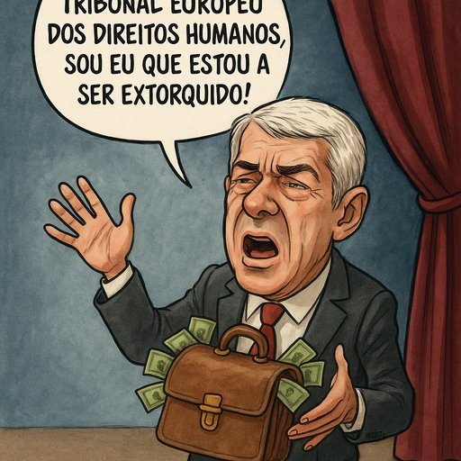

Publicado em 2025-07-01 18:18:19
Crónica satírica em três atos e um espelho partido
ATO I – O CHORO DO LADRÃO
José Sócrates, ex-primeiro-ministro de Portugal, figura central da ópera da bancarrota nacional, reaparece no palco europeu. Não para pedir perdão. Não para devolver os milhões de euros alegadamente ocultados em contas de amigos, motoristas ou sociedades exóticas. Mas sim… para se queixar!
Qual ator principal numa comédia do absurdo, apresenta-se em Bruxelas, perante o Tribunal Europeu dos Direitos Humanos, afirmando ser vítima do sistema judicial português. O mesmo sistema que, durante mais de uma década, se arrastou sem coragem para o condenar ou absolver. Agora, ele, que alegadamente terá transformado o cargo de primeiro-ministro numa bilheteira privada, quer que a Europa o proteja… de Portugal!
ATO II – O ESTADO DE NEGAÇÃO (OU O PAÍS DAS MALAS VOADORAS)
Recordemo-nos: Sócrates foi acusado de crimes de corrupção, branqueamento de capitais e falsificação de documentos. Dinheiro em malas, viagens de luxo, apartamentos pagos em cash, e todo um incrível mundo novo de engenharias financeiras.
Enquanto isso, o povo português enfrentava:
A dívida pública duplicou. O FMI entrou de malas feitas. E os jovens? Esses, voaram para fora – mas sem malas de dinheiro. Só com saudade e currículos na mão.
Mas agora, o homem das malas diz que é ele quem sofre!...
ATO III – A EUROPA DE OUVIDOS TAPADOS
O mais grotesco? O Tribunal Europeu aceita a queixa. Porque, na sua lógica fria e processual, a lentidão da justiça portuguesa pode de facto configurar violação de direitos.
O problema? Esta justiça lenta e ineficaz não é exceção — é sistema. E o verdadeiro escândalo não é Sócrates ter esperado 14 anos… é ainda não ter sido julgado nem condenado!
Onde está o direito dos portugueses a uma justiça célere, a políticos honestos, a um Estado que não seja cúmplice de burlões com diploma?
Onde está o direito à verdade?
EPÍLOGO – A TRAGICOMÉDIA DE UM PAÍS QUE NÃO RI
Enquanto Sócrates se diz extorquido, o país é que ficou de cócoras. Enquanto ele se queixa em francês técnico, há lares portugueses onde falta pão, onde a pobreza se aprofunda, onde os filhos não sonham porque os pais perderam a coragem.
Este processo é uma farsa judicial transformada em teatro europeu. Só que já ninguém ri. E quando o povo não ri, riem os bufões.
Artigo de Francisco Gonçalves in Fragmentos de Caos
"Do palácio à vitimização, Sócrates encena o último ato: o burlão veste agora a toga do injustiçado, suplicando à Europa que proteja o lobo… dos cordeiros!"